Front-end nâng cao: responsive, ảnh theo màn hình và “hack” game Dino bằng DevTools
Buổi học gồm ba phần. Phần một dùng @media để bố cục tự đổi theo độ rộng màn hình và khi in. Phần hai dùng thẻ <picture> để mỗi cỡ màn hình hiện một logo khác nhau. Phần ba dùng Chrome DevTools để đọc code game khủng long, cho nó không chết, chạy nhanh hơn và nhảy cao hơn.
Phần 1. Bố cục responsive với @media
Trang có hai khối: .left màu xanh chiếm 70% và .right màu đỏ chiếm 30%, đặt cạnh nhau bằng float. Sau đó thêm ba media query để bố cục đổi theo môi trường hiển thị.
| Điều kiện | Media query | Kết quả |
|---|---|---|
| Màn hình ≤ 768px (tablet, điện thoại) | screen and (max-width: 768px) | Hai khối đều rộng 100%, xếp chồng lên nhau |
| Màn hình từ 320px đến 480px | screen and (max-width: 479px) and (min-width: 321px) | Ẩn khối .right |
| Khi in trang | print | Ẩn .left, .right rộng 100% |
@media only screen and (max-width: 768px) { .left, .right { width: 100%; } } /* Nếu chiều rộng của trình duyệt từ 320px đến 480px thì ẩn class Right */ @media only screen and (max-width: 479px) and (min-width: 321px) { .right { display: none; } } /* Nếu ở chế độ máy in thì ẩn class Left */ @media only print { .left { display: none; } .right { width: 100%; } }
Để kiểm tra, mở DevTools (F12), bật chế độ thiết bị (Ctrl + Shift + M) và kéo độ rộng màn hình.
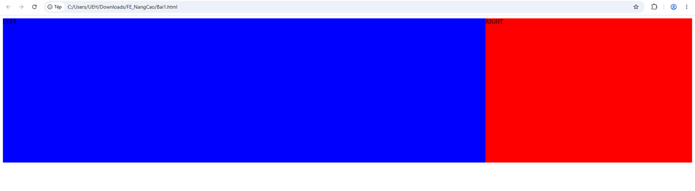
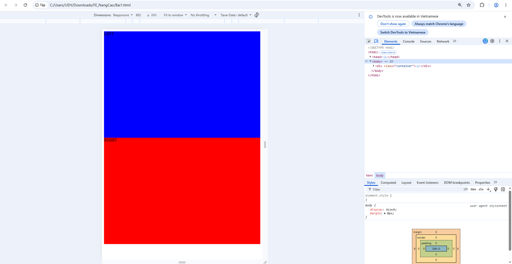
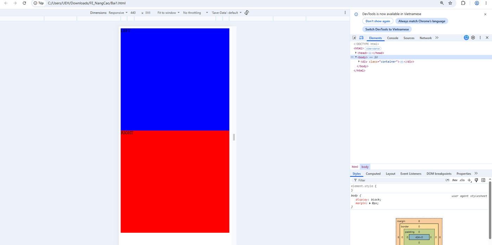
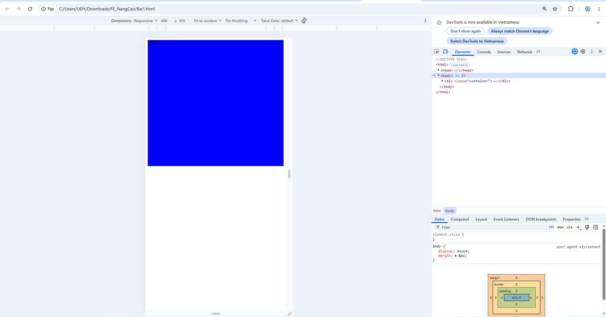
.right bị ẩn.Phần 2. Ảnh responsive với <picture>
Thẻ <picture> chứa nhiều thẻ <source>, mỗi thẻ có điều kiện media riêng. Trình duyệt duyệt từ trên xuống, gặp source đầu tiên khớp thì dùng ảnh đó. Nếu không cái nào khớp thì dùng ảnh trong thẻ <img> cuối cùng. Vì vậy điều kiện lớn nhất phải viết trước.
<picture> <!-- Bự nhất (>= 1000px): Logo UEH --> <source media="(min-width: 1000px)" srcset="https://www.ueh.edu.vn/images/logo-header.png"> <!-- Kéo vô (600px - 999px): Logo CTD --> <source media="(min-width: 600px)" srcset="https://ctd.ueh.edu.vn/wp-content/uploads/2023/07/cropped-TV_trang_CTD.png"> <!-- Kéo vô nữa (< 600px): Logo BIT --> <img alt="Logo" width="400" src="https://ueh.edu.vn/schools/college/images/logo/bit-header-logo.png"> </picture>
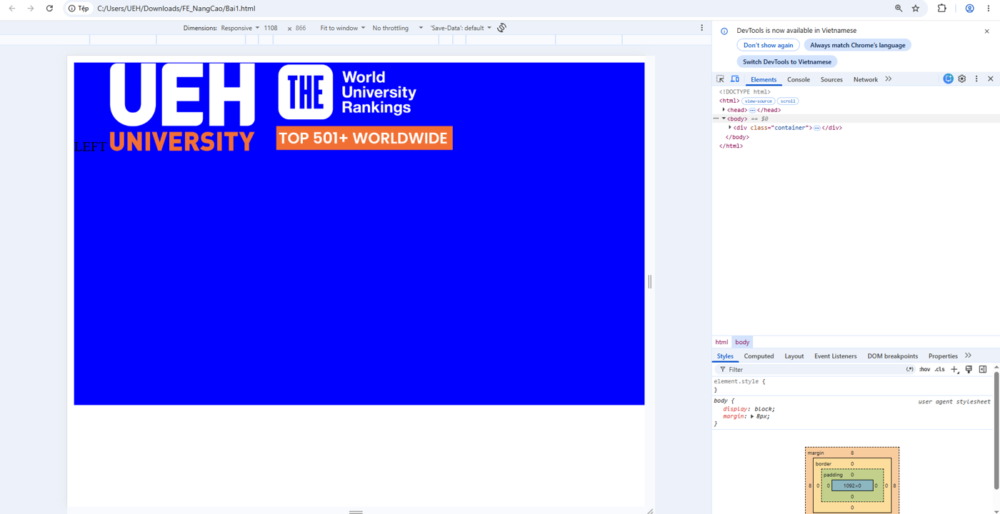
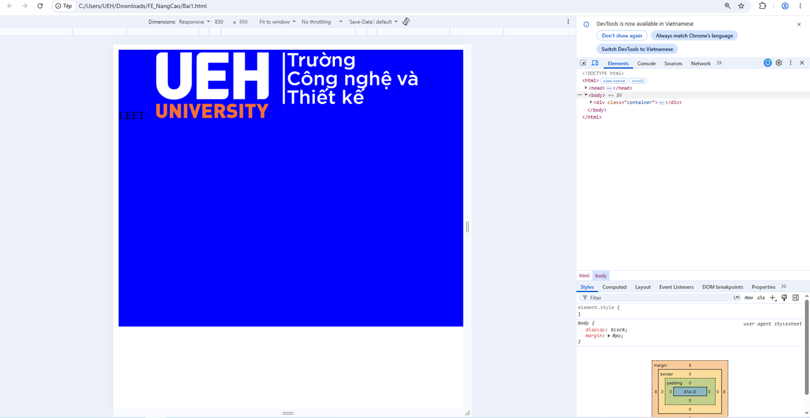
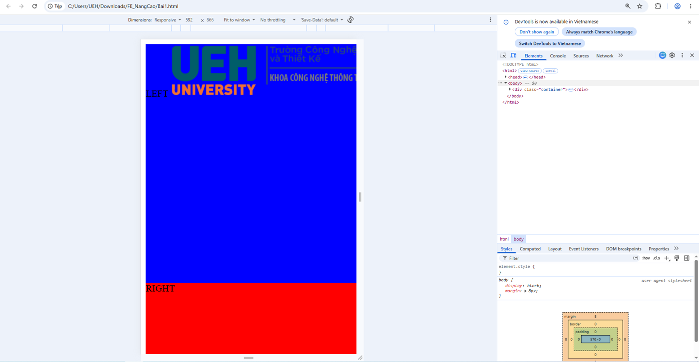
<img>).display: none, <picture> chỉ tải đúng một ảnh hợp với màn hình. Điện thoại không phải tải ảnh lớn của máy tính, nên trang nhẹ hơn.Phần 3. Dùng DevTools chỉnh game khủng long (chrome://dino)
Game khủng long của Chrome viết bằng JavaScript nên có thể mở code ra đọc và sửa ngay khi game đang chạy. Phần này luyện cách dùng tab Sources (tìm code, đặt breakpoint) và tab Console (chạy lệnh để đổi giá trị).
Bước 1. Tìm code và đặt breakpoint
Mở chrome://dino, nhấn F12, vào tab Sources và tìm từ khóa speed. Đặt breakpoint trong hàm update. Khi game dừng ở đó, khung Scope cho biết this đang là object nào và các biến có giá trị gì.
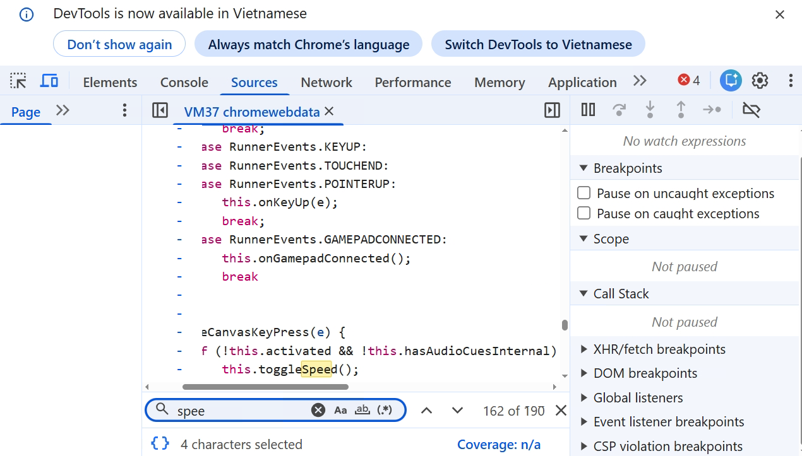
speed trong code của game.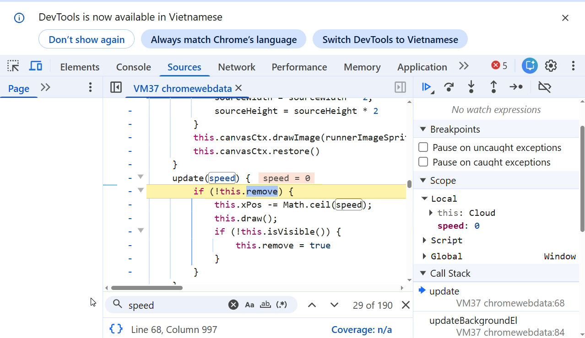
Bước 2. Cho khủng long không bao giờ chết
Khi đụng xương rồng, game gọi hàm gameOver(). Thay hàm này bằng một hàm rỗng thì game không kết thúc nữa.
this.gameOver = () => {} // khi đang dừng ở breakpoint trong Runner
Runner.instance_.gameOver = function(){} // bản game có biến Runner toàn cục
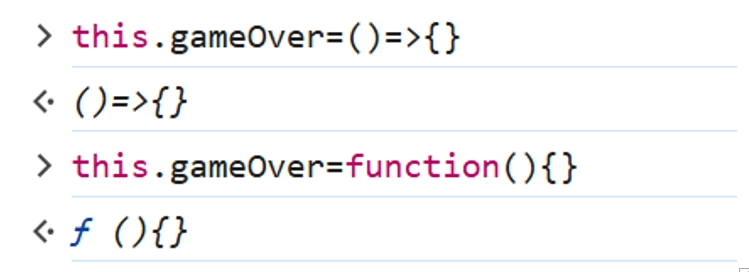
gameOver trong Console.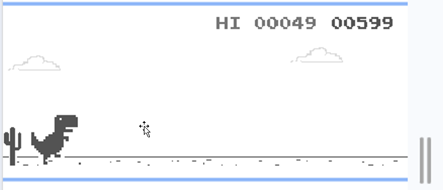
Bước 3. Đổi tốc độ cho chạy thật nhanh
Tốc độ mặc định khoảng 6. Hàm setSpeed() gán thẳng tốc độ mới.
Runner.instance_.setSpeed(60) // hoặc this.setSpeed(60) khi đang ở breakpoint
Bước 4. Đổi độ nhảy cho nhảy thật cao
Độ cao cú nhảy phụ thuộc vận tốc ban đầu khi nhảy (mặc định 10). Hàm setJumpVelocity() của khủng long đổi giá trị này.
Runner.instance_.tRex.setJumpVelocity(22) // hoặc this.tRex.setJumpVelocity(22)
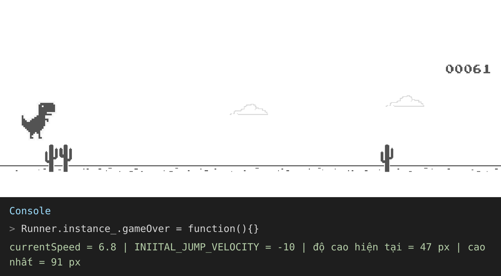
currentSpeed ≈ 6.8, vận tốc nhảy 10.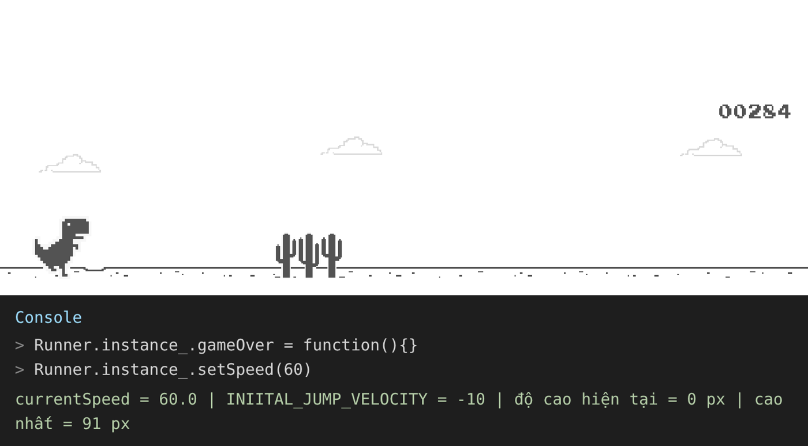
setSpeed(60): tốc độ 60.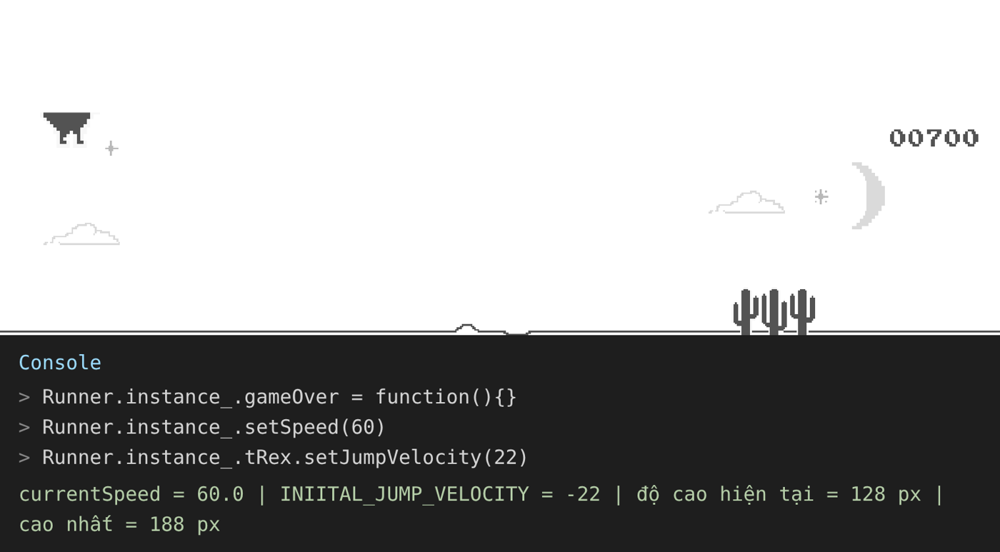
setJumpVelocity(22): khủng long bay vượt khỏi mép trên khung game, ảnh chụp lúc đang rơi xuống.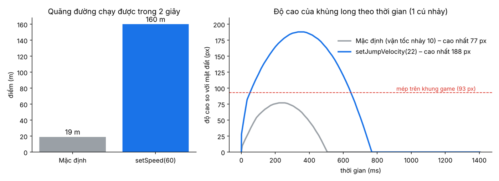
chrome://dino mới không còn biến Runner toàn cục, nên phải dừng ở breakpoint bên trong một hàm của Runner rồi dùng this. Ảnh minh chứng tốc độ và độ nhảy được chụp trên bản T-Rex Runner mã nguồn mở, dùng cùng code game với Chrome.Tổng kết
| Nội dung | Điều rút ra |
|---|---|
@media | Một trang HTML có thể đổi bố cục theo độ rộng màn hình hoặc khi in, không cần viết trang riêng cho điện thoại. |
<picture> | Chọn ảnh theo màn hình; source lớn nhất đặt trước, img làm ảnh dự phòng cuối. |
| DevTools | Sources để tìm code và đặt breakpoint; Console để đọc và sửa giá trị khi trang đang chạy. Đây cũng là cách debug một website thật. |